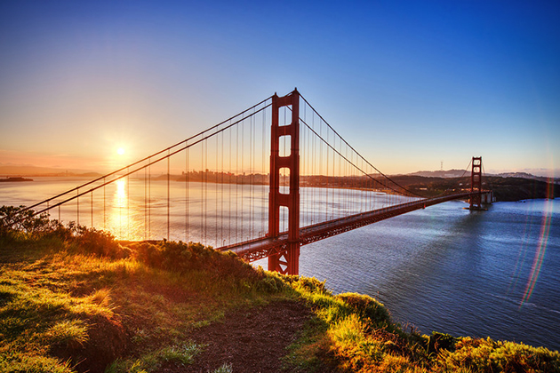
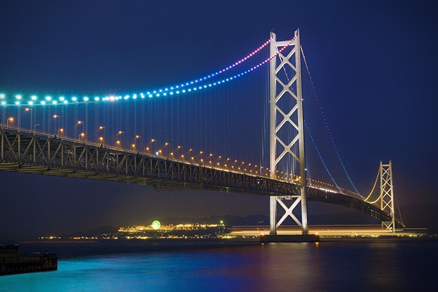

BOSPHORUS BRIDGE, TURKEY
Spanning the Bosphorus Strait in Istanbul, the Bosphorus Bridge connects the continents of Europe and Asia. It’s been equipped with a computerized LED lighting system so that at night, fully lit, it’s pretty impressive. The only other bridge to connect two continents is the Fatih Sultan Mehmet, about fifty yards up the river. Oh and there’s the Suez Bridge, too, and Istanbul has a third one on the way. Be done in December. Ok, so they’re everywhere.
More
![ GOLDEN GATE BRIDGE, SAN FRANCISCO The iconic bridge synonymous with San Francisco is considered by some to be the most beautiful bridge in the world. The American Society of Civil Engineers has named it one of the Wonders of the Modern World (though honestly, they may be a bit biased). Built in 1937, it was the longest suspension bridge in the world until 1964, and no, we’re not done with the superlatives yet. It is the most photographed bridge. At the time it was built, San Francisco’s growth was below average. A bridge connection to the other bay communities would help to solve that. Many experts said it couldn’t be done, claiming that the Bay’s extreme winds and smothering fogs would prevent construction and operation More](images/g1.jpg){kind=link}
![ AKASHI KAIKYO BRIDGE, JAPAN Before the bridge was built – it’s currently the longest suspension bridge in the world – you’d have had to board a ferry to get from Kobe to Iwaya. This worked out until 1955, when two ferries sank and 168 people were killed. That’s when the bridge was planned. Construction took twelve years, and it was completed in 1998. In 1995 when only the two towers were in place, the Great Hanshin earthquake moved them further apart, so the span had to be increased by three feet More](images/g2.jpg){kind=link}
{kind=link}
{kind=link}
{kind=link}
{kind=link}